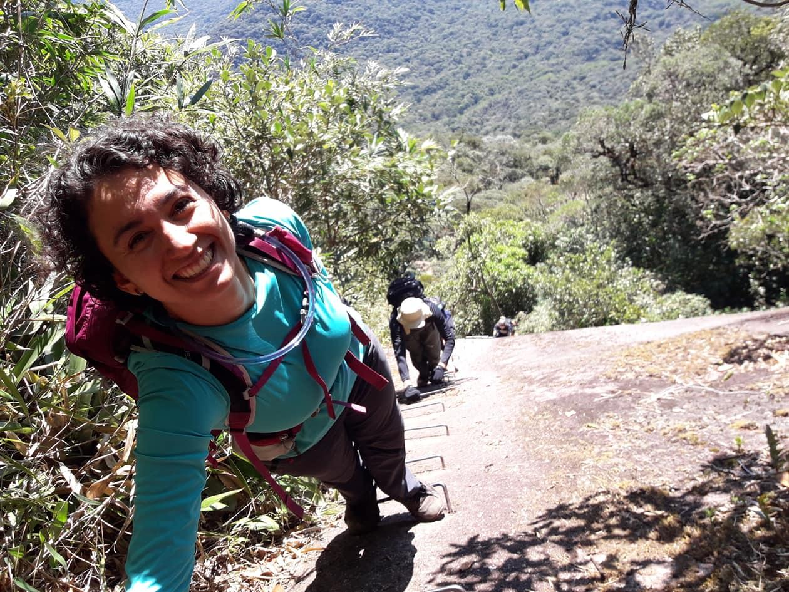
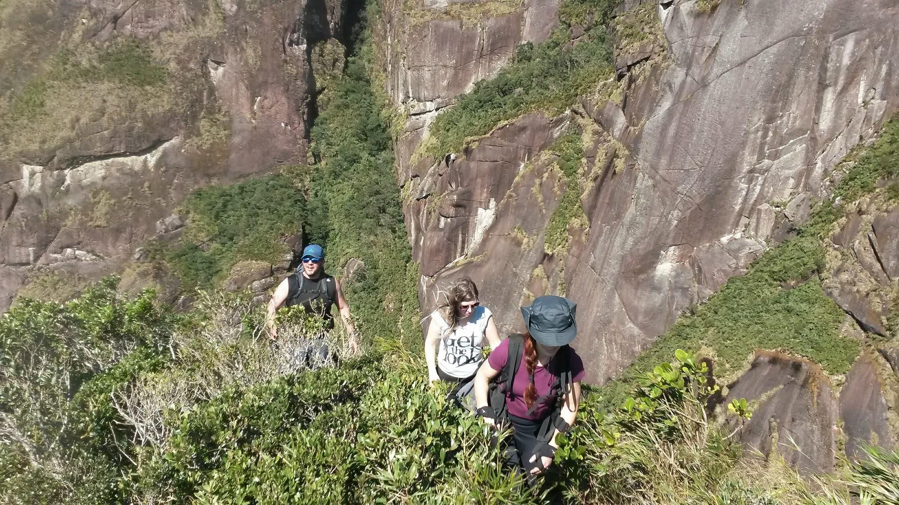
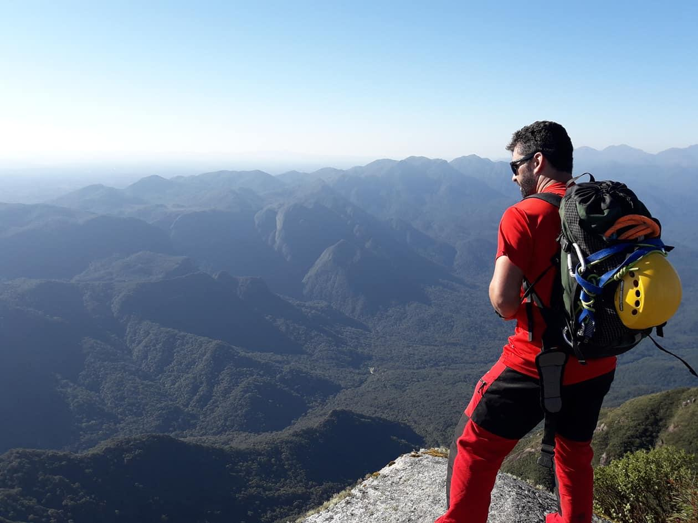
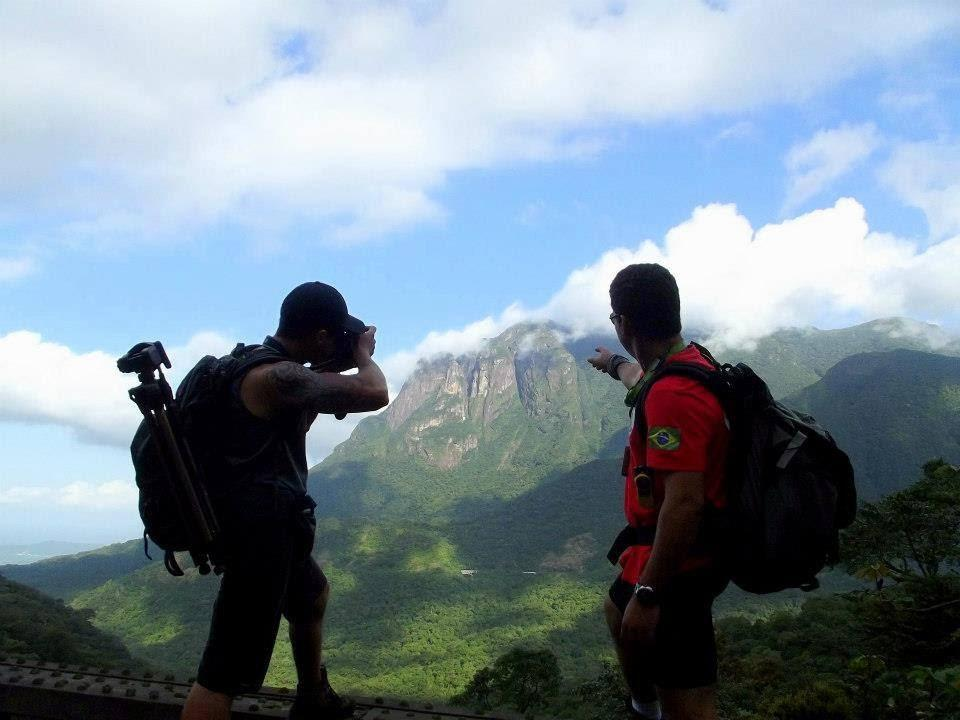
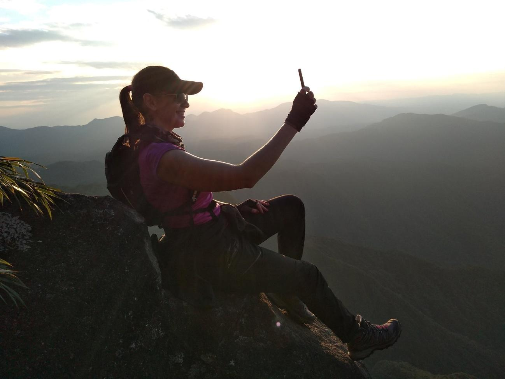
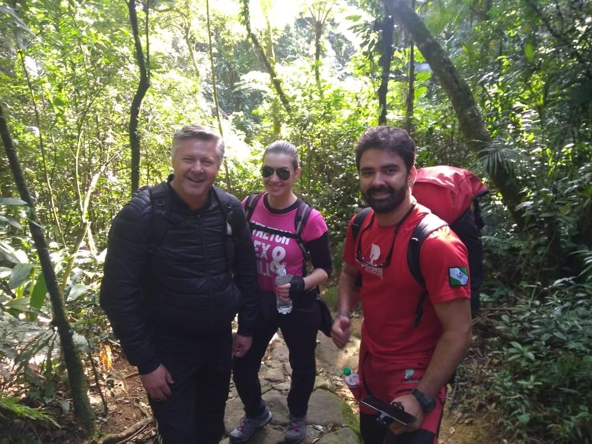
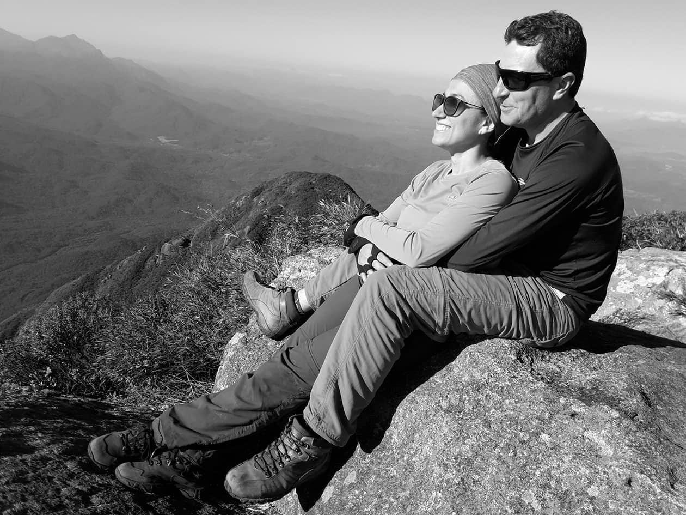
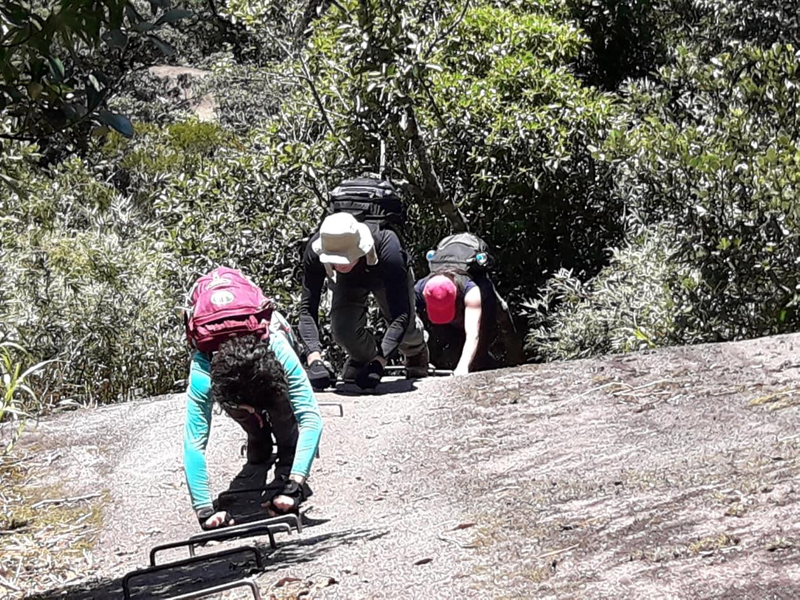

Detalhes do Roteiro
Conjunto Pico Marumbi
Nesse pacote, atingimos o ponto mais alto do conjunto, sendo o Pico Olimpo com 1539 m de altitude, localizado em pleno coração da Serra do Mar paranaense, o Parque Estadual do Marumbi resguarda muitas riquezas da Mata Atlântica brasileira.
Chegando ao pico podemos estender a sua aventura, fazendo a descida pela trilha noroeste (pelo outro lado), tornando sua atividade mais intensa, (desde que suas condições físicas e psicológicas estejam normais). Lembrando que; o parque possui um plano de manejo a seguir, sempre respeitamos as normas do parque, traçando plano de ação antes de fazer a ascensão, repassando a administração do parque com antecedência.
Para aqueles que gostam de atividades ao ar livre, é o local perfeito, pois oferece tanto opções de trilhas e banhos de cachoeira, quanto escaladas em belíssimas paredes rochosas, com diversos níveis de dificuldade. Com 2.340 hectares, o parque foi criado em 1990 e é hoje um dos principais atrativos turísticos do Paraná.
A trilha para acesso ao Monte Olimpo se estende após a chegada à Estação do Parque Marumbi, passando antes pelo Posto do IAP e pela Estação Engenheiro Lange.
Temos apoio de nosso transporte 4x4 até a Estação Engenheiro Lange, após uma trilha de calçamento de 1 km até a Base Estação Marumbi.
Serviços incluídos:
1 noite de hospedagem no centro de Morretes, podendo ser pernoite antes ou após a atividade;
Traslado operacional 4x4 In/Out a partir de Morretes;
Tarifas
| N° de pessoas | Guia bilíngue | Valor |
|---|---|---|
| 2 a 8 | Não | R$ 1250.00 |
| 2 a 8 | Sim | R$ 1370.00 |
Galeria de Fotos







